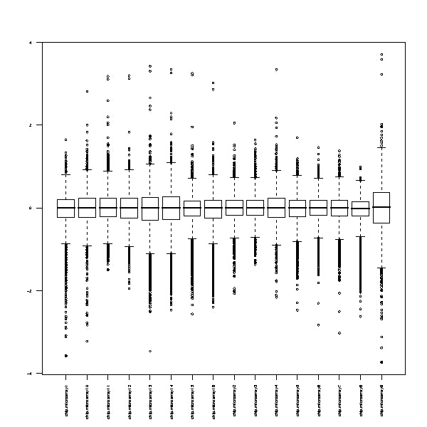
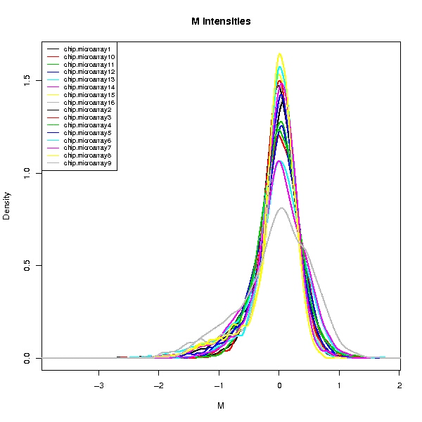

Creates some basic plots for cDNA quality control.
Three plots are created: boxplot, density plot and MA plot. Boxplot and density plot give an idea about the distribution of the data, and MA plot can be used for assessing the possible nonlinearity in the data caused by dye bias.
Three images visualizing the plots mentioned above.
The arrays should be centered around the same number in the boxplot. Deviant arrays can be identified by the deviation from the common median value or by a spread that is greater than for other chips.
The density plot visualizes the spread of expression values. Each lines corresponds to the smoothed histogram for one chip. Optimally, all lines should have a similar form, and have their peaks at the same location. Usually this is not reached, and the chips that deviate from others can be identified by their flatter line or a higher spread.
